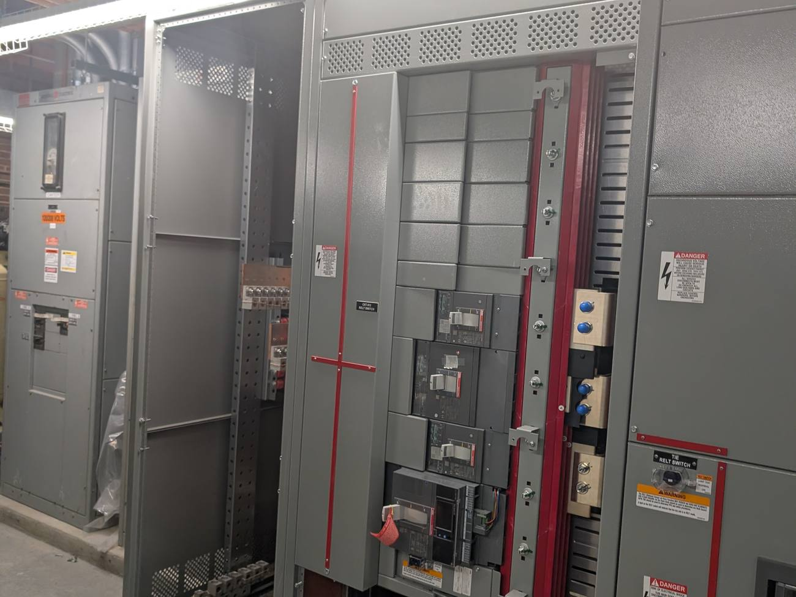
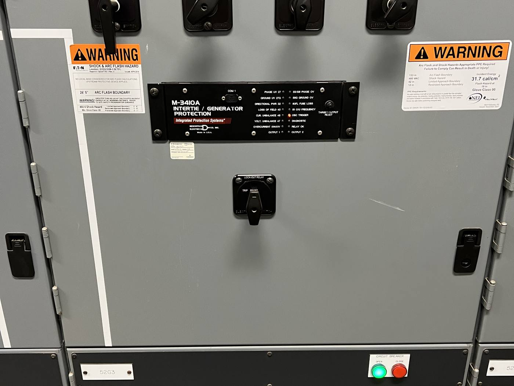

What commissioning actually does
Commissioning (Cx) is a third-party verification process. We test systems (air handlers, chillers, controls, switchgear, fire alarm) under real operating conditions, against the design intent, and document where they fall short. Then we work with the contractor to fix it before the warranty period expires.
That's it. No magic. The leverage is in the rigor.
A real example: the plant that fought itself
Alares served as construction manager and commissioning agent for a new combined heat and power (CHP) plant at the Newington VA Medical Center in Connecticut, a roughly $18M plant with three generators, an absorption chiller and a cooling tower tied into the existing campus chilled water system.
During functional testing, our team found that the control sequence for the chillers wasn't working the way the drawings said it should. The hot water loop feeding the existing building heat exchanger was actually cooling the hot water meant to drive the absorption chillers, the plant was quietly working against itself. We recommended a revised control sequence, the controls were reprogrammed, and the fix was incorporated into the project.
Nobody would have caught that from a set of as-builts. You catch it by testing the system under load, which is exactly what commissioning is.
Three places it earns its keep
1. Catching design-vs.-reality gaps before occupancy
Almost every project has at least one system that comes in working "kind of", fans set to the wrong CFM, dampers stuck open, sequences of operation that look fine on paper but fight each other in the field. Commissioning surfaces these while the contractor is still on the hook. After substantial completion, the same fixes become change orders.
2. Verifying critical infrastructure, not just comfort systems
Commissioning isn't only about HVAC. On the campus electrical distribution upgrade at the Baltimore VAMC, Alares commissioned the main transformers, switchgear, automatic transfer switches and distribution panels, the equipment a hospital cannot afford to have fail, all verified against the VA Whole Building Commissioning Process Manual through documentation, startup, calibration, performance testing and training.
3. Documentation operations can actually use
Most as-built drawings rot in a binder. Commissioning produces something different: a verified record of how every system was set up, what the sequences are, and what to do when something drifts. Two years later, when something breaks at six in the morning, that document is what saves the call-back.
What about retrocommissioning?
Retrocommissioning assesses how an existing building's systems perform and where operational changes could help. Across 11 VA hospital campuses in VISN 1 (New England), Alares identified opportunities for projected energy savings of 15 to 20 percent through improvements to existing systems. Actual savings depend on implementation and subsequent measured performance.
Planning the next step
For a new build, establish the commissioning scope before testing begins. For an existing facility, start with the operational problems you need to investigate. In either case, define the systems to test, the documentation required and who will be responsible for resolving and retesting issues.

